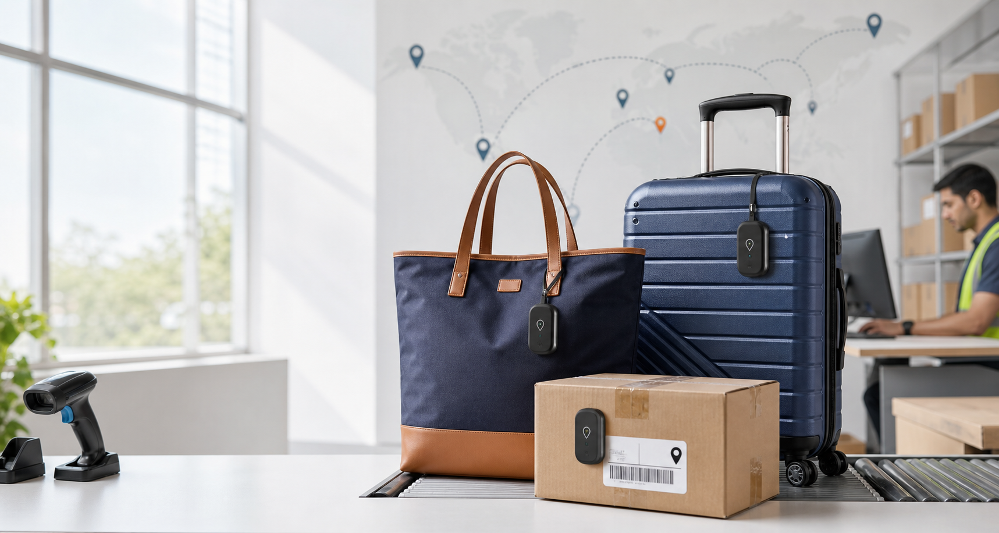

Item history
See every scan, handler, note, and exception in one clean record.

Smart bag and parcel visibility
Keep every tote, parcel, and travel bag visible from pickup to handoff with simple scans, clear status updates, and delivery-ready records.
Workflow
Track & Tote gives each item a simple digital trail so teams can confirm pickup, movement, storage, and final delivery without messy spreadsheets or scattered messages.
Add a QR or barcode label to the tote, bag, or parcel.
Capture location, handler, and timestamp at every step.
Give customers and operators a single view of what is moving and what needs attention.
Built for daily operations
See every scan, handler, note, and exception in one clean record.
Share status links that reduce calls and keep handoffs transparent.
Spot delayed, misplaced, or unscanned items before they become bigger issues.
Monitor today’s movement, pending pickups, and completed deliveries at a glance.
Ready to move
Tell us what you need to track and where handoffs happen. We’ll help shape a setup that fits.